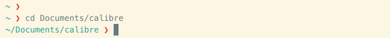
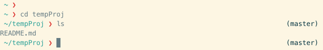
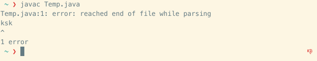

Zsh-Prompto
Zsh-Prompto is a simple-and-sweet, lightweight-and-useful prompt for zsh users.
Features:
- Current directory

- Name of git branch

- Non-zero command-exit indicator

- Number of background jobs

Installation
-
Clone the
zsh-promptorepository:git clone https://github.com/manasthakur/zsh-prompto.git -
Symlink the code file:
mkdir -p ~/.zsh; ln -sf <PATH TO zsh-prompto>/zsh-prompto.zsh ~/.zsh/zsh-prompto.zsh -
To update zsh-prompto, just pull the latest version:
cd <PATH TO zsh-prompto>; git pull
Feel free to ping me for any queries/suggestions.